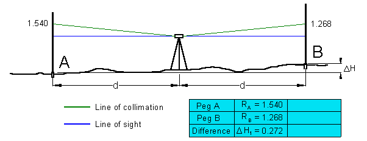
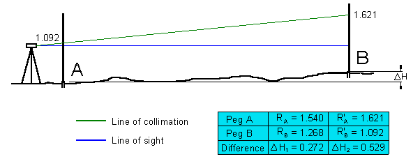

1) Project requirementsTwo Peg TestBefore you start any project work your first task will be to carry out a two peg test to ensure your level is properly calibrated. Record in your field notes the process and state whether the test results are within the calibration limits. Collimation error occurs when the collimation axis is not truly horizontal when the instrument is levelled. The effect is illustrated in the sketch below:
 Figure 1Figure 2, The difference between the readings Figure 1 & 2 is not the same, therefore the the collimation
|
||||||||||||||
Project 2 |
refer to Learning Plan |
Project 3 | refer to Learning Plan |
Hand in your submission as soon as possible but not later as directed by your lecturer. |
|
PROJECT 1 | (Two Peg Test) |
PROJECT 2 | (Grid levelling) |
PROJECT 3 |
(Building set out) |
Be careful when setting the Profiles. Please make sure you don't damage this equipment.Please read 'How to set out a Building using profiles'. |
|